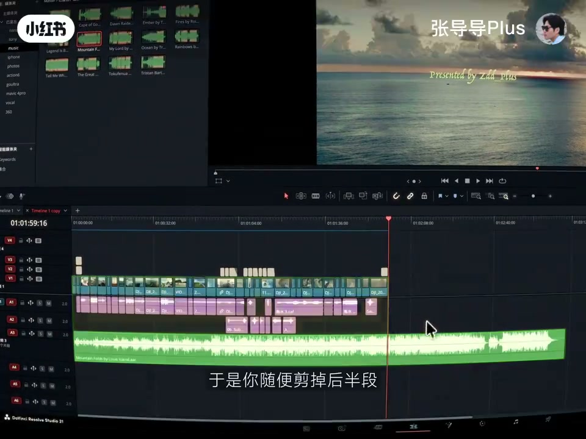
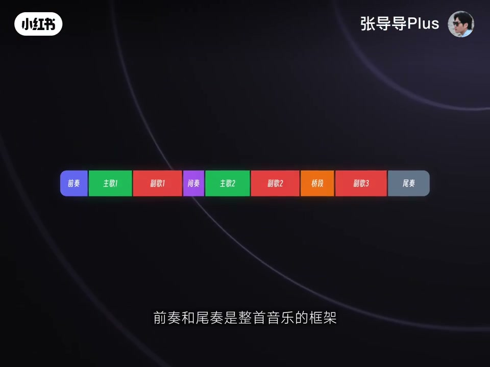
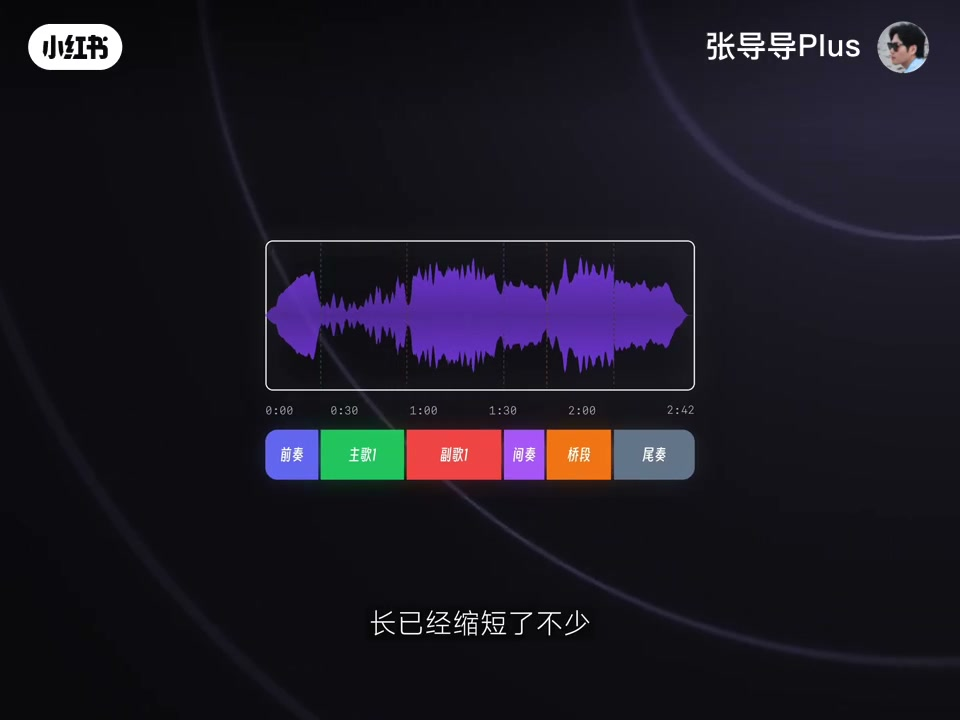
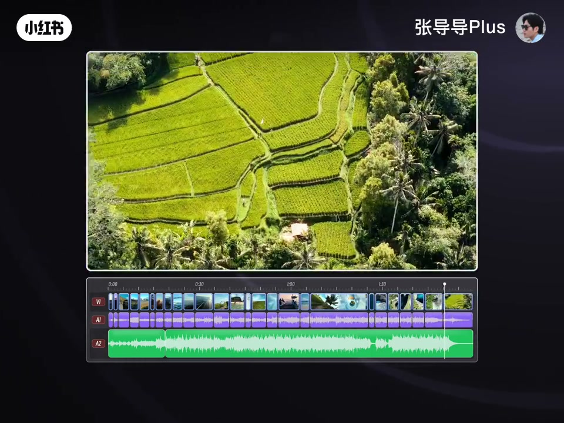

内容要点
知识结构
音乐长于画面时，乱剪后半段会突兀；歌曲本身尾奏常自然降量，更优做法是删掉中间重复，让原有结尾留下来。
前奏/尾奏是框架、一般保留；主歌多段通常留一段；副歌是高潮可多段取舍；间奏可遇不可求。删重复后框架仍在，时长已缩短。
①删第一副歌+间奏+第二主歌，主歌直接接第二副歌；②前奏接第二主歌更快进情绪；③同词同节奏的 loop 可无缝拼接。
先听整曲在段落转换打标记；按能量递进删第一段；loop 连奏四遍可删中间二、三遍并对齐节拍；副歌也可按八段做首尾拼接。
有的曲子全程无重复，手工标段费时；作者做 WaveMix 自动标段并按目标时长生成多套方案。听不出接缝是及格，音乐贴画面转折才是目标。
无缝配乐靠的是段落与 loop 逻辑，不是感觉和硬淡出；先保留框架、删中间重复，再用节拍对齐把接缝藏住。
图文实录
开场：为什么「砍掉后半段」听着假
找到合适音乐拖进时间线，却发现比画面长很多。常见操作是随便剪掉后半段——结束太突然，再加一个淡出，听着仍不自然。作者指出：歌曲本身的结尾音量往往慢慢降下去；若剪掉中间重复部分，就能留下自然收尾。于是定题：学音乐无缝剪辑。

先看结构：前奏尾奏、主歌副歌、间奏
从编曲看，标准歌曲常有前奏—主歌—副歌等段落，有时两段副歌之间还有桥段/间奏。作者强调不是教写歌，但只有理解段落，才能剪好。剪辑价值：前奏与尾奏构成框架、通常不重复，负责引入与收尾，能量升降自然，一般保留；主歌情绪平稳、叙述推进，通常两段、多数情况保留一段即可；副歌是高潮、感染力强，常有多段可取舍；间奏「可遇不可求」，好的间奏画面感极强。删掉重复后，框架仍在，时长已缩短不少。

三种裁切方案 + loop 拼接
方案一：删掉第一段副歌、间奏和第二段主歌，让第一段主歌直接接第二段副歌——只有一个节点，最简单也不突兀。方案二：前奏直接接第二段主歌，跳过铺垫，更快进入情绪。方案三：利用 loop——底层循环节奏；歌词重复处伴奏也常重复，前后唱词与节奏一致就可直接拼接，自然缩短又保留较完整结构。

达芬奇实战：打点、删段、一接四
配乐有两派：按已剪画面节奏裁音乐，或先剪音乐再剪画面——作者演示第二种。步骤：整曲播放，在段落转换打标记看清骨架；把必须保留的片段换色标记；按能量递进删掉相对重复的第一段，让前奏接上间奏部分。若仍偏长：同一 loop 常连着重复四遍，删掉中间第二、第三遍，让第一遍直接接第四遍，并用软件节拍识别对齐——听感无违和，时长可少一半。副歌也可划成八段，让第一、二段接第七、八段。只要存在 loop，副歌、间奏乃至前奏尾奏都能如此处理；也可反向用 loop 延长。

没有 loop 怎么办？WaveMix 与真正目标
有的配乐从头到尾没有重复，无法 loop 拼接；况且每首歌都要标段落、找重复、对齐节拍，确实麻烦。作者用 AI 做了网站 WaveMix：拖入音乐自动标出前奏副歌与节拍，在时长重塑面板填目标时长即可生成多套方案，可试听接缝后导出；也演示了纯音乐压到 30 秒与两首自动拼接。公测中，更复杂功能下集再讲。
收尾：剪辑何尝不是一种编曲。点赞收藏转发，下期再见。